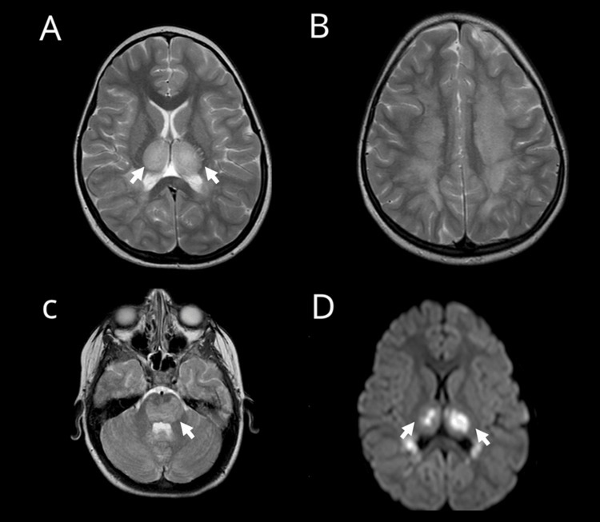
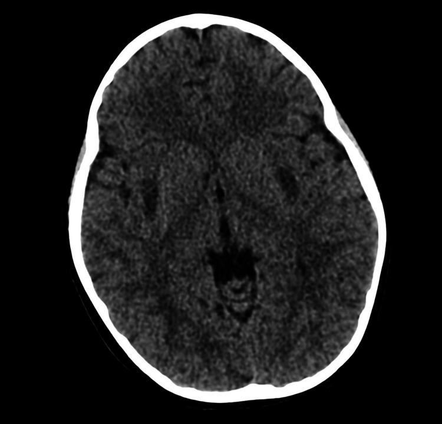

6169 — Bệnh não do cúm (influenza-associated encephalopathy) ở trẻ: đồi thị hai bên, "dấu ba lớp" và cửa sổ 24–72 giờ
Tags: pattern:doi-thi-hai-ben pattern:han-che-khuếch-tán pattern:xuat-huyet-doi-thi pattern:trilaminar vung:nao vung:nao-that protocol:MRI-so-nao protocol:DWI-ADC protocol:SWI incidentaloma:khong
Mức chắc chắn (certainty): tổng hợp y văn (literature synthesis) — ghép phân tích gộp 15 nghiên cứu/138 ca ANE nhi (Front Neurol 2026, PMCID PMC13719322, CC BY 4.0), phân tích gộp 1.946 ca hội chứng não–bệnh sau nhiễm (ITES) (EClinicalMedicine 2026, PMCID PMC13543797, CC BY 4.0), báo cáo giám sát CDC 2024–25 về IAE/ANE ở trẻ Mỹ (MMWR-type, 2025, PMCID PMC12463191, không rõ giấy phép), và ca nguyên văn ANE do cúm B có CT + MRI (Cureus 2026, PMCID PMC13326859, CC BY 4.0). Không có ca do nhóm tự chụp.
Câu chốt: trẻ sốt 1–3 ngày rồi lừ đừ/co giật/đi vào hôn mê, CT sớm thường chỉ "hơi mờ" hoặc bình thường, trong khi MRI thấy đồi thị hai bên đối xứng, hạn chế khuếch tán, có thể xuất huyết. Đây là bệnh não do cúm (influenza-associated encephalopathy, IAE) — thể nặng nhất là bệnh não hoại tử cấp (acute necrotizing encephalopathy, ANE): 94,2% ca nhi có tổn thương đồi thị hai bên, 15,3% có xuất huyết trong tổn thương, và tử vong 35–41% (PMC13719322, PMC13543797, PMC12463191). Không nhận ra trong 24–72 giờ là mất cửa sổ điều trị.
1. Tổng quan bệnh học – cơ chế hình ảnh (TẠI SAO)
1.1. Vì sao cúm gây tổn thương ĐỒI THỊ chứ không phải "viêm não" lan tỏa
- Cơ chế chính là "bão cytokine", không phải virus xâm nhập nhu mô: cúm kích hoạt đại thực bào/lympho T giải phóng IL-6, TNF-α, IL-1β; cytokine làm mở hàng rào máu–não → phù mạch (vasogenic) rồi hoại tử tế bào (PMC13719322, PMC13703285). Vì vậy dịch não tủy thường KHÔNG tăng tế bào nhưng protein tăng — khác viêm não do virus trực tiếp.
- TẠI SAO đồi thị: đồi thị có mật độ thụ thể glutamate/NMDA cao, nhu cầu chuyển hóa và mạch máu lớn nhất trong chất xám sâu → nhạy nhất với cơn bão cytokine + độc tính glutamate; dẫn lưu tĩnh mạch sâu (xoang thẳng, tĩnh mạch nội bộ) là "vùng cuối" của dòng chảy, nên phù và xuất huyết tụ ở đây. Cùng nhóm cấu trúc dễ tổn thương: chất trắng quanh não thất, bao trong, thể vân (putamen), thuỳ thái dương, trần thân não, tiểu não — đúng danh sách "common" trong tiêu chuẩn chẩn đoán ANE (PMC13543797).
- Hệ quả hình ảnh: mô hoại tử giàu nước nội bào → ADC giảm (hạn chế khuếch tán thật); khi tế bào vỡ và xuất huyết vi thể, tổn thương mất tính đồng nhất → dấu ba lớp (trilaminar sign) = vòng trung tâm hoại tử/xuất huyết + vòng trung gian + vòng ngoài phù, tương ứng "concentric structures" trong tiêu chuẩn ANE (PMC13543797).
1.2. TẠI SAO CT sớm hay "âm tính" — vật lý của phù não trên CT
- Phù não chỉ làm giảm 2–5 HU ở giai đoạn đầu; mắt người chỉ phân biệt được ≈ 5–10 HU giữa hai vùng mô, và ở trẻ nhu mô não còn nhiều nước, độ tương phản xám–trắng thấp → CT ngày 1 thường chỉ thấy đồi thị "hơi tối" hoặc hoàn toàn bình thường (xem ảnh mục 6 — CT của ca nguyên văn chỉ có giảm tỷ trọng kín đáo ở putamen hai bên).
- Vì vậy CT không dùng để loại trừ ANE; CT dùng để loại trừ chảy máu lớn, tụt kẹt, và tìm nguyên nhân khác cấp cứu. MRI (DWI/ADC + T2/FLAIR + SWI) là phương thức chốt, và phải chụp lại 48–72 giờ nếu lần đầu bình thường mà trẻ xấu đi — thời điểm nặng nhất trung vị ngày thứ 3 (PMC13543797).
1.3. Ngưỡng định lượng nằm lòng (dùng cho mục 3 và 4)
| Đại lượng | Số liệu | Nguồn |
|---|---|---|
| Tổn thương đồi thị hai bên ở ANE nhi | 94,2% (129/136) | PMC13719322 |
| Thân não / thể vân / tiểu não / lan tỏa | 33,6% / 28,5% / 17,5% / 14,4% | PMC13719322 |
| Xuất huyết trong tổn thương | 15,3% (21/137) | PMC13719322 |
| Tử vong ANE nhi (gộp ngẫu nhiên) | 39,1% (KTC 95%: 29,8–49,8); 54/138 | PMC13719322 |
| Tử vong cấp ANE (1.946 ca ITES) | 35%; tốt sau 6 tháng (mRS 0–2) chỉ 33% | PMC13543797 |
| Tử vong IAE / ANE ở trẻ Mỹ 2024–25 | 19% / 41% | PMC12463191 |
| Ca IAE được xác nhận trong 192 báo cáo | 109 IAE, trong đó 37 ANE (34%) | PMC12463191 |
| Tuổi trung vị / trẻ trước đó khoẻ mạnh / vào ICU | 5 tuổi / 55% / 74% | PMC12463191 |
| Trẻ đủ điều kiện đã tiêm cúm mùa 2024–25 | 16% | PMC12463191 |
| Thời gian từ khởi phát thần kinh đến đỉnh nặng | trung vị 3 ngày | PMC13543797 |
| Dịch não tủy | tế bào bình thường + protein tăng; transaminase tăng, ammonia bình thường | PMC13543797 |
| Liệu pháp đã dùng (ANE nhi) | corticoid 75,9%, IVIG 51,8%; tocilizumab chọn lọc | PMC13719322 |
| Hồi phục hoàn toàn / di chứng ở ca sống | 20,2% / 40,6% | PMC13719322 |
- Chưa rõ — cần tra: không có ngưỡng ADC (×10⁻⁶ mm²/s) hay ngưỡng thể tích đồi thị được thẩm định để phân tầng ANE; mọi con số trên là dịch tễ/kết cục, không phải tiêu chuẩn hình ảnh định lượng.
- Cảnh báo dịch tễ: số 39,1% là gộp các ca đã báo cáo (nguy cơ thiên lệch công bố), còn 41% là của một mùa cúm nặng ở Mỹ; không dùng để tiên lượng từng trẻ.
2. Mẫu hình + chẩn đoán phân biệt theo vị trí (Gamut)
- Đồi thị hai bên đối xứng + hạn chế khuếch tán + sốt: ANE (cúm A/B, SARS-CoV-2), huyết khối xoang tĩnh mạch sâu/não (CVST), HIE ở trẻ đủ tháng, hạ đường huyết, ngộ độc CO, bệnh Leigh/thể não–tủy, thiếu vitamin B1 (Wernicke), hủy myelin thẩm thấu (osmotic demyelination).
- Đồi thị + thể vân + chất trắng quanh não thất, có xuất huyết: ANE là hàng đầu; loại trừ CVST bằng MRV và bệnh mạch máu (bóc tách, dị dạng) bằng MRA.
- Chất trắng dưới vỏ, hạn chế khuếch tán XUẤT HIỆN MUỘN (ngày 3–14), không ở đồi thị: AESD (động kinh hai pha, "bright tree appearance", liên quan HHV-6; tử vong thấp hơn nhưng di chứng 46%) (PMC13543797).
- Thể chai (splenium) đơn độc: MERS (thường sau rotavirus), hồi phục hoàn toàn 99% — điều trị hỗ trợ, không dùng corticoid liều cao mặc định.
- Tiểu não (nhân răng) + hải mã + thân não sau opioid: CHANTER (bài 3101) — bối cảnh thuốc, không có bão cytokine.
- Vỏ não thái dương một bên + xuất huyết: viêm não herpes — acyclovir ngay, không chờ MRI.
- Gợi nhớ ANE = Altered consciousness > 24 giờ, Neuroimaging đồi thị đối xứng, Enzyme gan tăng (ammonia bình thường).
3. Bảng so sánh phân biệt (ma trận đối chiếu)
| Thực thể (entity) | Hình ảnh điển hình (CT/MRI) | Chốt vào (rule-in) | Chốt loại (rule-out) | Gợi ý xác nhận |
|---|---|---|---|---|
| ANE do cúm | Đồi thị hai bên đối xứng, T2/FLAIR sáng, DWI sáng + ADC thấp, dấu ba lớp, 15,3% xuất huyết; thân não 33,6% | Sốt + rối loạn ý thức > 24 giờ + đồi thị hai bên; dịch não tủy tế bào bình thường, protein tăng, transaminase tăng | Tổn thương một bên, vỏ não thái dương, hoặc chất trắng dưới vỏ đơn thuần → nghĩ nguyên nhân khác | PCR cúm (âm tính không loại trừ), MRI lặp 48–72 giờ, IL-6 |
| AESD | Chất trắng dưới vỏ hạn chế khuếch tán ngày 3–14, "bright tree", giữ nguyên hồi trước–sau trung tâm | Động kinh hai pha (ngày 1–2 rồi ngày 3–7) + hình ảnh muộn ở chất trắng dưới vỏ | Đồi thị là tổn thương chính → ANE; thể chai đơn độc → MERS | MRI ngày 3–5 (đừng chụp quá sớm), HHV-6 |
| MERS | Thể chai (splenium) hạn chế khuếch tán đồng nhất, có thể lan toàn thể chai | Bệnh cảnh nhẹ, hồi phục nhanh, mRS 0–2 sau 6 tháng 99% | Tổn thương đồi thị/thân não hoặc ý thức sâu kéo dài → không phải MERS | MRI 3–7 ngày, rotavirus, theo dõi lâm sàng |
| HIE ở trẻ đủ tháng | Đồi thị + nhân nền hai bên, có thể lan cột sau tủy; ADC thấp | Tiền sử ngạt chu sinh, pH/kiềm dư thấp, điểm Apgar, hội chứng não sơ sinh | Khởi phát sau 1 tuổi hoặc có sốt nhiễm trùng rõ → không phải HIE | Bệnh sử chu sinh + lactate; MRI sớm 3–5 ngày |
| Hạ đường huyết | Vỏ chẩm–đỉnh + nhân nền, thường không đối xứng hoàn toàn, ADC thấp | Glucose < 2,6 mmol/L (47 mg/dL) tại thời điểm triệu chứng, hồi phục sau bù glucose | Đồi thị đối xứng hoàn hảo + sốt cao → ANE | Glucose mao mạch, MRI sau bù đường |
| Ngộ độc CO | Globus pallidus hai bên, có thể lan chất trắng; xuất huyết | Bệnh sử phơi nhiễm (lò sưởi, khói), COHb tăng, nhiều người trong nhà cùng triệu chứng | Phơi nhiễm âm tính + tổn thương đồi thị → nghĩ ANE | COHb (khí máu), bối cảnh gia đình |
| Viêm não herpes | Thuỳ thái dương một bên, vỏ não, phù, xuất huyết, ngấm thuốc màng não | Sốt + co giật cục bộ + rối loạn ngôn ngữ, PCR HSV dịch não tủy | Tổn thương hai bên đồi thị → không điển hình herpes | PCR HSV, EEG, acyclovir ngay |
| CVST (xoang sâu/não) | Đồi thị hai bên nhưng kèm nhồi máu xuất huyết, giãn não thất, không thấy dòng chảy xoang | MRV/CTV thiếu tín hiệu xoang; đau đầu + tăng áp lực nội sọ | Xoang thông tốt trên MRV → loại trừ | MRV thì tĩnh mạch, D-dimer |
| CHANTER (bài 3101) | Nhân răng tiểu não + hải mã + thân não, đối xứng | Bối cảnh opioid, không sốt | Không phơi nhiễm opioid + đồi thị là tổn thương chính | Bệnh sử thuốc, MRI |

Ca nguyên văn trẻ 6 tuổi khoẻ mạnh, cúm B, ngày 2–3: (A) T2 axial — đồi thị hai bên tăng tín hiệu đối xứng (mũi tên); (B) T2 trên não thất — ổ tăng tín hiệu chất trắng quanh não thất; (C) T2 hố sau — trung tâm thân não (pons) tăng tín hiệu (mũi tên); (D) DWI — hạn chế khuếch tán mạnh ở đồi thị hai bên (mũi tên). Ảnh nguyên bản, không crop. Nguồn: Cureus 2026, PMCID PMC13326859, CC BY 4.0.4. Protocol chụp + phân tầng xử trí
4.1. Thứ tự hình ảnh (không được đảo)
- CT sọ không cản quang khi trẻ hôn mê/co giật: mục đích loại trừ chảy máu lớn, tụt kẹt, não úng thủy cấp — không dùng để chẩn đoán ANE.
- MRI sọ khẩn (≤ 24 giờ) với DWI + ADC + T2/FLAIR + T1 ± SWI + MRA/MRV: bắt buộc đủ 4 chuỗi để trả lời 3 câu — (a) có hạn chế khuếch tán thật? (b) có xuất huyết? (c) có huyết khối xoang/mạch?
- Lặp MRI sau 48–72 giờ nếu lần đầu bình thường mà trẻ xấu đi (đỉnh bệnh trung vị ngày 3); lặp 1–3 tháng để đánh giá teo đồi thị/hang hóa và tiên lượng.
- Chọc dò dịch não tủy sau khi loại trừ tăng áp lực nội sọ: gửi tế bào, protein, glucose, PCR đa tác nhân (cúm, HSV, HHV-6, enterovirus), IL-6 nếu có.
- Xét nghiệm máu: transaminase, ammonia (bình thường giúp phân biệt với bệnh chuyển hóa), glucose, lactate, đông máu, ferritin/CRP.
flowchart TD
A[Trẻ sốt 1-3 ngày rồi lừ đừ, co giật, hôn mê] --> B[ABC + glucose + khám thần kinh]
B --> C{Co giật kéo dài hoặc dấu tăng áp lực nội sọ?}
C -->|Có| D[Chống co giật, chống phù não, CT sọ cấp]
C -->|Không| E[MRI sọ: DWI/ADC + T2/FLAIR + SWI + MRV]
D --> E
E --> F{Đồi thị hai bên đối xứng + hạn chế khuếch tán?}
F -->|Có| G[ANE: ICU, corticoid + IVIG, kháng virus, theo dõi 48-72 giờ]
F -->|Không| H{Tổn thương ở đâu?}
H -->|Chất trắng dưới vỏ ngày 3-14| I[AESD: hỗ trợ, chống co giật]
H -->|Thể chai đơn độc| J[MERS: hỗ trợ, tiên lượng tốt]
H -->|Vỏ thái dương một bên| K[Herpes: acyclovir ngay + PCR HSV]
H -->|Đồi thị + thiếu tín hiệu xoang| L[CVST: kháng đông theo phác đồ]
G --> M[MRI lặp 48-72 giờ và 1-3 tháng]
I --> M
J --> M
K --> M
L --> M
4.2. Phân tầng điều trị (bằng chứng quan sát, chưa có RCT)
| Mức | Lâm sàng – hình ảnh | Xử trí |
|---|---|---|
| IAE nhẹ (MERS/encephalopathy không tổn thương sâu) | Tỉnh táo dao động, không co giật kéo dài, MRI không có tổn thương đồi thị | Hỗ trợ, kiểm soát sốt, theo dõi 24–48 giờ; không corticoid liều cao |
| IAE có tổn thương sâu | Đồi thị/thân não, hạn chế khuếch tán, ý thức giảm | ICU; methylprednisolon 10–30 mg/kg/ngày × 3–5 ngày (thực hành phổ biến, chưa có RCT); IVIG 1–2 g/kg chia 2–5 ngày; kháng virus nếu PCR cúm dương |
| ANE nặng / có xuất huyết | Xuất huyết đồi thị, thân não, hôn mê sâu | ICU + hạ thân nhiệt có kiểm soát (thực hành Nhật, bằng chứng quan sát); tocilizumab/anakinra trong thể tăng viêm; không mổ giải áp trừ khi có thoát vị |
| Theo dõi sau | Teo/hang hóa đồi thị, động kinh muộn, chậm phát triển | Phục hồi chức năng, EEG khi có cơn, MRI 1–3 tháng, tư vấn di chứng 40,6% |
- Kháng virus: oseltamivir/zanamivir không chứng minh cải thiện thần kinh, nhưng dùng khi cúm dương tính; không chậm corticoid để chờ kết quả PCR.
- Không có thang điểm hình ảnh được thẩm định cho ANE; phân tầng dựa vào (1) mức ý thức, (2) thân não, (3) xuất huyết — ba yếu tố này gắn với tử vong/di chứng trong các loạt quan sát.
5. Biến thể bình thường và cạm bẫy
- Cạm bẫy 1 — "CT bình thường thì loại trừ": CT ngày 1 chỉ giảm 2–5 HU; ca nguyên văn (ảnh quiz) chỉ có giảm tỷ trọng kín đáo ở putamen, phải MRI mới thấy đồi thị. CT âm tính không bao giờ được dừng chẩn đoán.
- Cạm bẫy 2 — ADC giả hồi phục (pseudonormalization): ngày 3–7, ADC có thể trở về bình thường trong khi DWI vẫn sáng → dễ gọi là "T2 shine-through" và bỏ ANE. Cách tránh: đọc DWI + ADC + T2 cùng lúc, và SWI/T2* để tìm xuất huyết.
- Cạm bẫy 3 — "đồi thị hai bên = ANE" tuyệt đối: CVST, HIE, hạ đường huyết, Wernicke, Leigh, hủy myelin thẩm thấu đều đối xứng. Bắt buộc MRV trước khi kết luận, nhất là khi có đau đầu + giãn não thất.
- Cạm bẫy 4 — PCR cúm âm tính: virus có thể đã được đào thải khi trẻ vào viện (bệnh cảnh sau nhiễm), hoặc do cúm B/SARS-CoV-2; không loại trừ ANE.
- Cạm bẫy 5 — dịch não tủy "bình thường": ANE có tế bào bình thường + protein tăng; coi "dịch trong" là loại trừ bệnh não là sai.
- Cạm bẫy 6 — bỏ sót thân não và xuất huyết: đã thấy đồi thị thì vẫn phải soát trần thân não (33,6%) và xuất huyết (15,3%) — hai yếu tố đổi tiên lượng và mức điều trị (satisfaction of search).
- Cạm bẫy 7 — "chỉ là co giật do sốt": co giật kéo dài > 30 phút, tái phát trong cùng đợt sốt, hoặc không tỉnh lại sau cơn → không phải co giật do sốt; chụp MRI.
- Biến thể bình thường dễ nhầm: nhân bèo (pulvinar) tăng tín hiệu nhẹ theo tuổi ở trẻ nhỏ trên T2; khoảng giảm tín hiệu đồi thị do myelination ở trẻ < 6 tháng — luôn so hai bên đối xứng và so với vỏ não cùng tuổi.

Cùng bệnh nhi: CT không cản quang lúc nhập viện — giảm tỷ trọng nhẹ, đối xứng ở putamen hai bên, không có máu tụ, không tụt kẹt. Đây là lý do CT không loại trừ ANE; tổn thương đồi thị rõ chỉ thấy trên MRI (ảnh trên). Ảnh nguyên bản, không crop. Nguồn: Cureus 2026, PMCID PMC13326859, CC BY 4.0.6. Tự lượng giá — Blind Quiz
Ca 1 — Bé gái 6 tuổi, khoẻ mạnh, sốt 2 ngày rồi co giật toàn thể, sau cơn lừ đừ, không nói, không nhìn theo. CT sọ tại tuyến trước "không có gì".
- Hỏi: (1) CT có loại trừ được bệnh não không? (2) Bạn chụp gì tiếp và đọc những chuỗi nào? (3) 3 chẩn đoán phân biệt hàng đầu?
Bấm để hiện đáp án (findings + chẩn đoán)
- CT: giảm tỷ trọng kín đáo, đối xứng ở putamen hai bên; không loại trừ được ANE.
- Bước tiếp: MRI sọ khẩn với DWI + ADC + T2/FLAIR + SWI + MRV.
- Findings trên MRI: đồi thị hai bên tăng T2, hạn chế khuếch tán mạnh; thêm chất trắng quanh não thất và trần thân não (pons).
- Chẩn đoán: ANE do cúm B — bão cytokine, phù độc tế bào + hoại tử đồi thị.
- Phân biệt: CVST (cần MRV), HIE (bệnh sử chu sinh), viêm não herpes (vỏ thái dương một bên), AESD (tổn thương chất trắng dưới vỏ xuất hiện ngày 3–14).
- Xử trí: ICU, corticoid + IVIG, kháng virus, MRI lặp 48–72 giờ vì đỉnh bệnh trung vị ngày 3.
- Nguồn ảnh: Cureus 2026, PMCID PMC13326859, CC BY 4.0.
Ca 2 — Bé trai 1,5 tuổi, sốt cao ngày 1 co giật kéo dài, tỉnh lại, đến ngày 4 co giật cục bộ liên tiếp và lơ mơ. MRI ngày 5:
- Hỏi: tổn thương ở đâu, vì sao MRI ngày 1 có thể bình thường, tiên lượng khác ANE thế nào?
Bấm để hiện đáp án
- Hình ảnh: hạn chế khuếch tán ở chất trắng dưới vỏ (bright tree appearance) ngày 3–14, giữ nguyên hồi trước–sau trung tâm; đồi thị không là tổn thương chính.
- Chẩn đoán: AESD (động kinh hai pha + hạn chế khuếch tán muộn), thường sau HHV-6; MRI quá sớm (ngày 1–2) có thể bình thường.
- Tiên lượng: tốt sau 6 tháng 54% (so với ANE 33%); tử vong cấp thấp hơn ANE.
- Xử trí: chống co giật, hỗ trợ; không corticoid liều cao mặc định.
- Nguồn số liệu: EClinicalMedicine 2026, PMCID PMC13543797, CC BY 4.0.
Ca 3 — Bé gái 9 tuổi, tiêu chảy do rotavirus, ngày 3 lú lẫn nhẹ, không co giật, không sốt cao. MRI: ổ hạn chế khuếch tán đồng nhất ở thể chai.
Bấm để hiện đáp án
- Chẩn đoán: MERS (tổn thương thể chai hồi phục), liên quan rotavirus; hồi phục hoàn toàn 99% (mRS 0–2 sau 6 tháng).
- Vì sao không phải ANE: không có tổn thương đồi thị/thân não, ý thức chỉ rối loạn nhẹ và hồi phục nhanh.
- Xử trí: hỗ trợ, theo dõi; không leo thang miễn dịch; MRI lặp nếu xấu đi.
- Nguồn: EClinicalMedicine 2026, PMCID PMC13543797, CC BY 4.0.
Bài liên quan chéo
- 3062 – Viêm màng não tái diễn ở trẻ có dị tật tai trong (nhiễm trùng thần kinh trung ương ở trẻ, đường vào từ tai)
- 3101 – Hội chứng CHANTER sau opioid (tổn thương hai bên sau thuốc, không sốt)
- 1738 – Ngộ độc khói lửa/CO ở trẻ (globus pallidus hai bên)
- 216 – Dị dạng mạch & huyết khối xoang tĩnh mạch (đồi thị hai bên do tắc tĩnh mạch sâu)
- 653 – PRES/RCVS ở trẻ (phù não hai bên, bối cảnh huyết áp/thuốc)
- 212 – Xuất huyết sọ não (loại trừ chảy máu lớn trên CT)
Ảnh
6169_benh-nao-cum_CT_PMC13326859-F1.jpg— CT sọ ngày 1, giảm tỷ trọng putamen hai bên; Cureus 2026, PMCID PMC13326859, CC BY 4.0.6169_benh-nao-cum_MRI_PMC13326859-F2.jpg— MRI T2 + DWI: đồi thị, chất trắng quanh não thất, pons; Cureus 2026, PMCID PMC13326859, CC BY 4.0.- Chi tiết nguồn, giấy phép, phái sinh:
images/CREDITS.md; link bài gốc:sources.md.
Không dùng để chẩn đoán độc lập khi chưa có người hướng dẫn.